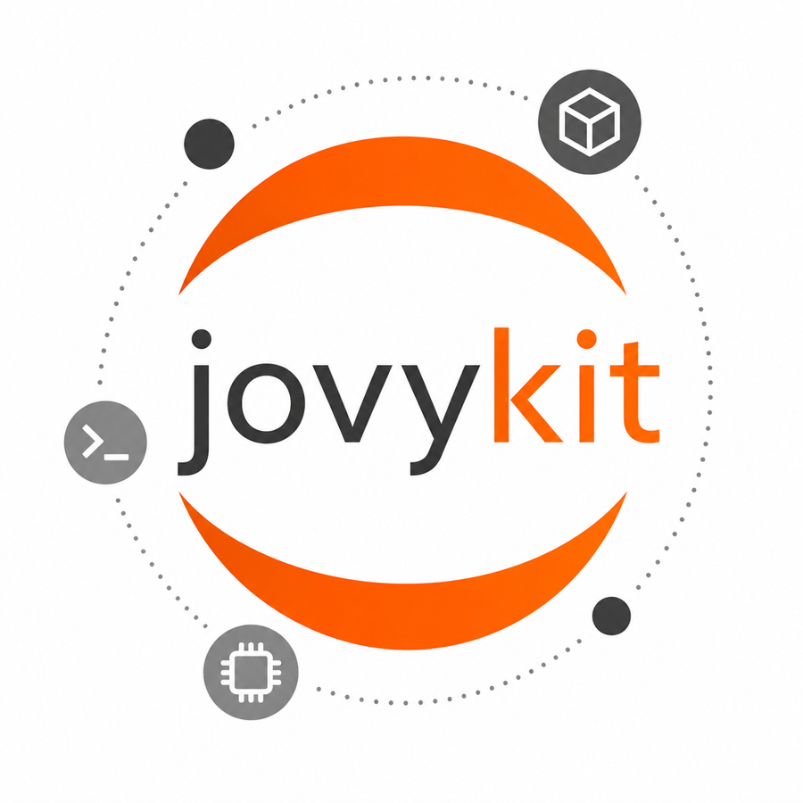

Local by default
A project gets jovy.toml, .jovy/, and
work/. The shape is easy to inspect and easy to throw
away.

JovyKitJupyter containers that feel local
A venv-like command line for project-local JupyterLab environments: readable generated files, uv-locked dependencies, layered notebook images, and Docker Compose kept politely out of your way.
jovy init .jovy --image base && jovy add pandas scikit-learn && jovy run
A project gets jovy.toml, .jovy/, and
work/. The shape is easy to inspect and easy to throw
away.
Direct package specs live in TOML, uv compiles a lockfile, and the generated Containerfile installs exactly that environment.
Run attached, start detached, follow logs, open a shell, or use the full-screen terminal dashboard when you want a cockpit.
jovy init .jovy --image base --gpus auto
jovy add pandas plotly scikit-learn
jovy install --upgrade
jovy run
Research projects often start as notebooks, then grow into packages, scripts, and repeatable environments. JovyKit keeps that path grounded in normal files instead of one-off container state.
You still get Docker Compose, GPU reservations, custom volumes, extra apt packages, and a generated overlay image. You just operate them through commands that read like the project workflow.
Jupyter runtime and core scientific Python.
Everyday data science, statistics, ML, and local data access.
NLP, time series, distributed compute, and API tooling.
Heavier AI, graph, geospatial, big-data, and research tooling.
jovy status --json
{
"environment": ".jovy",
"image": "jovykit-research:local",
"jupyter_url": "http://127.0.0.1:8888/lab",
"running": true
}Status output can be JSON. Logs can be tailed with timestamps. Shell commands run inside the notebook service. The dashboard uses the same command model, so interactive work and automation stay in step.